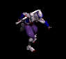
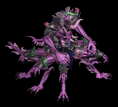
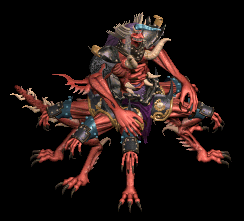
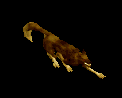
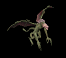
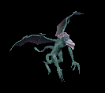
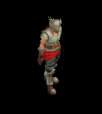
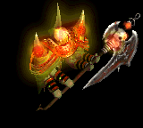
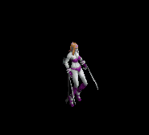

鍵 をドロップするmob一覧
一覧ページへ
| 死の双剣士 | アンデット | セミ1 | ||||||
|---|---|---|---|---|---|---|---|---|
 | 片手剣(390) | 槍(260) | 鍵(30) | 兜・帽子(220) | 槍投擲機(200) | 帰還(160) | クロー(390) | 箒(260) |
| 地獄の双剣 | アンデット | ボス1 | ||||||
 | 片手剣(470) | 弓(310) | 鍵(50) | 兜・帽子(260) | 槍投擲機(240) | 帰還(190) | クロー(470) | 銃(310) |
| ジャンキー | アンデット | セミ1 | ||||||
 | スリング(390) | ステッキ(260) | 鍵(30) | 兜・帽子(220) | イヤリング(200) | ブローチ(150) | ||
| アライブコープス | アンデット | ボス1 | ||||||
 | スリング(470) | ステッキ(310) | 鍵(50) | 足(260) | 首(240) | ブローチ(160) | ||
| ゴースト | アンデット | 一般1 | ||||||
 | 笛(410) | 翼(10) | 鍵(10) | マント(230) | イヤリング(210) | ブローチ(150) | 水晶(410) | |
| 幻影 | アンデット | ボス1 | ||||||
 | 笛(470) | 翼(310) | 鍵(470) | マント(260) | イヤリング(240) | ブローチ(190) | 水晶(310) | |
| ローグ | 人間 | 一般2 | ||||||
 | 投擲(380) | ステッキ(250) | 鍵(10) | 職業鎧(210) | 爪(190) | 特殊1(150) | ||
| スナッチャー | 人間 | 一般3 | ||||||
|  | 投擲(360) | ステッキ(140) | 鍵(30) | 職業鎧(200) | 爪(180) | 特殊1(140) | ||
| レッドアイ護衛兵 | 人間 | 一般4 | ||||||
 | 槍(300) | 両手剣(200) | 鍵(20) | 鎧(170) | 手首(150) | 十字架(140) | 鎌(200) | 箒(300) |
| テンプラー | 人間 | セミ2 | ||||||
 | 槍(420) | 両手剣(280) | 鍵(30) | 兜・帽子(230) | 手首(210) | 十字架(150) | 鎌(280) | 箒(420) |
| アルゴス | 悪魔 | セミ3 | ||||||
 | 笛(450) | 翼(300) | 鍵(450) | 兜・帽子(250) | 首(230) | 帰還(180) | 水晶(300) | |
| ウェアーゴート | 悪魔 | 一般3 | ||||||
 | 鞭(360) | 翼(240) | 鍵(20) | グローブ(200) | 指輪(180) | 宝石(140) | 水晶(240) | |
| ストーンラーバ | 悪魔 | ボス1 | ||||||
 | none(470) | 杖(310) | 鍵(470) | マント(260) | イヤリング(240) | 宝石(190) | 本(310) | |
| ストーンキーパー | 悪魔 | ボス2 | ||||||
|  | none(490) | 片手剣(330) | 鍵(490) | 足(270) | 爪(250) | 宝石(200) | クロー(330) | |
| 赤い悪魔 | 悪魔 | ボス3 | ||||||
|  | none(510) | 両手剣(340) | 鍵(510) | 職業鎧(280) | 首(260) | 能力向上1(200) | 鎌(340) | |
| 野良犬 | 動物 | 一般1 | ||||||
 | 牙(410) | 笛(270) | 鍵(10) | 職業鎧(230) | 槍投擲機(210) | 特殊1(160) | 双剣(410) | |
| レッドアイ警備犬 | 動物 | セミ1 | ||||||
 | 牙(390) | 鞭(260) | 鍵(30) | 職業鎧(220) | 槍投擲機(200) | 特殊1(160) | 双剣(390) | |
| ヘルハウンド | 動物 | ボス2 | ||||||
|  | 牙(490) | 両手剣(330) | 鍵(50) | 職業鎧(270) | 槍投擲機(250) | 特殊1(200) | 鎌(330) | 双剣(490) |
| キングベアー | 動物 | ボス1 | ||||||
 | 翼(470) | 笛(310) | 鍵(30) | 兜・帽子(260) | 爪(240) | 宝石(190) | 水晶(470) | |
| 死の双剣士Ex | アンデット | セミ1 | ||||||
| 片手剣(450) | 槍(300) | 鍵(30) | 兜・帽子(250) | 槍投擲機(230) | 帰還(180) | クロー(450) | 箒(300) |
| 地獄の双剣Ex | アンデット | ボス1 | ||||||
| 片手剣(1200) | 弓(800) | 鍵(50) | 兜・帽子(670) | 槍投擲機(600) | 帰還(480) | クロー(1200) | 銃(800) |
| ジャンキーEx | アンデット | セミ1 | ||||||
| スリング(450) | ステッキ(300) | 鍵(30) | 兜・帽子(250) | イヤリング(230) | ブローチ(150) | ||
| アライブコープスEx | アンデット | ボス1 | ||||||
| スリング(1200) | ステッキ(800) | 鍵(60) | 足(670) | 首(600) | ブローチ(160) | ||
| ゴーストEx | アンデット | 一般1 | ||||||
| 笛(410) | 翼(270) | 鍵(10) | マント(230) | イヤリング(210) | ブローチ(150) | 水晶(270) | |
| 幻影Ex | アンデット | ボス1 | ||||||
| 笛(1200) | 翼(800) | 鍵(1200) | マント(670) | イヤリング(600) | ブローチ(190) | 水晶(800) | |
| ローグEx | 人間 | 一般2 | ||||||
| 投擲(380) | ステッキ(250) | 鍵(20) | 職業鎧(210) | 爪(190) | 特殊1(150) | ||
| スナッチャーEx | 人間 | 一般3 | ||||||
| 投擲(360) | ステッキ(240) | 鍵(30) | 職業鎧(200) | 爪(180) | 特殊1(140) | |||
| レッドアイ護衛兵Ex | 人間 | 一般4 | ||||||
| 槍(300) | 両手剣(200) | 鍵(30) | 鎧(170) | 手首(150) | 十字架(140) | 鎌(200) | 箒(300) |
| テンプラーEx | 人間 | セミ2 | ||||||
| 槍(650) | 両手剣(430) | 鍵(50) | 兜・帽子(360) | 手首(330) | 十字架(150) | 鎌(430) | 箒(650) |
| アルゴスEx | 悪魔 | セミ3 | ||||||
| 笛(800) | 翼(530) | 鍵(50) | 兜・帽子(440) | 首(400) | 帰還(320) | 水晶(530) | |
| ウェアーゴートEx | 悪魔 | 一般3 | ||||||
| 鞭(360) | 翼(240) | 鍵(40) | グローブ(200) | 指輪(180) | 宝石(140) | 水晶(240) | |
| ストーンラーバEx | 悪魔 | ボス1 | ||||||
| none(1200) | 杖(800) | 鍵(550) | マント(670) | イヤリング(600) | 宝石(480) | 本(800) | |
| ストーンキーパーEx | 悪魔 | ボス2 | ||||||
| none(2000) | 片手剣(1330) | 鍵(600) | 足(1110) | 爪(1000) | 宝石(800) | クロー(1330) | ||
| 赤い悪魔Ex | 悪魔 | ボス3 | ||||||
| none(2800) | 両手剣(1870) | 鍵(700) | 職業鎧(1560) | 首(1400) | 能力向上1(1120) | 鎌(1870) | ||
| 野良犬Ex | 動物 | 一般1 | ||||||
| 牙(410) | 笛(270) | 鍵(20) | 職業鎧(230) | 槍投擲機(210) | 特殊1(160) | 双剣(410) | |
| レッドアイ警備犬Ex | 動物 | セミ1 | ||||||
| 牙(450) | 鞭(300) | 鍵(60) | 職業鎧(250) | 槍投擲機(230) | 特殊1(180) | 双剣(450) | |
| ヘルハウンドEx | 動物 | ボス2 | ||||||
| 牙(2000) | 両手剣(1330) | 鍵(130) | 職業鎧(1110) | 槍投擲機(1000) | 特殊1(800) | 鎌(1330) | 双剣(2000) | |
| キングベアーEx | 動物 | ボス1 | ||||||
| 翼(1200) | 笛(800) | 鍵(200) | 兜・帽子(670) | 爪(600) | 宝石(480) | 水晶(1200) | |
| ガーゴイルEx | 神獣 | 一般1 | ||||||
 | 鞭(410) | 翼(270) | 鍵(10) | 兜・帽子(230) | 爪(210) | 能力向上1(160) | 水晶(270) | |
| マーブルガゴイルEx | 神獣 | 一般4 | ||||||
 | 鞭(300) | 翼(200) | 鍵(10) | 兜・帽子(170) | 爪(150) | 能力向上1(120) | 水晶(200) | |
| エボニーガゴイルEx | 神獣 | セミ1 | ||||||
|  | 鞭(450) | 翼(300) | 鍵(20) | 兜・帽子(250) | 爪(230) | 能力向上1(180) | 水晶(300) | |
| オニキスガゴイルEx | 神獣 | セミ2 | ||||||
 | 鞭(650) | 翼(430) | 鍵(40) | 兜・帽子(360) | 爪(330) | 能力向上1(260) | 水晶(430) | |
| オデロンガゴイルEx | 神獣 | ボス2 | ||||||
|  | 鞭(2000) | 投擲(1330) | 鍵(60) | 兜・帽子(1110) | 爪(1000) | 能力向上1(800) | ||
| ニックスEx | 神獣 | 一般2 | ||||||
 | 鈍器(380) | 片手剣(250) | 鍵(30) | 鎧(210) | イヤリング(190) | 肩刺青(110) | クロー(250) | |
| トリトンEx | 神獣 | ボス2 | ||||||
 | 鈍器(2000) | 片手剣(1330) | 鍵(210) | 鎧(1110) | イヤリング(1000) | 肩刺青(150) | クロー(1330) | |
| 死の双剣士Zin | アンデット | セミ1 | ||||||
| 片手剣(650) | 槍(430) | 鍵(10) | 兜・帽子(360) | 槍投擲機(330) | 帰還(260) | クロー(650) | 箒(430) |
| 地獄の双剣Zin | アンデット | ボス1 | ||||||
| 片手剣(1000) | 弓(670) | 鍵(40) | 兜・帽子(560) | 槍投擲機(500) | 帰還(400) | クロー(1000) | 銃(670) |
| ジャンキーZin | アンデット | セミ1 | ||||||
| スリング(650) | ステッキ(430) | 鍵(60) | 兜・帽子(360) | イヤリング(330) | ブローチ(150) | ||
| アライブコープスZin | アンデット | ボス1 | ||||||
| スリング(1000) | ステッキ(670) | 鍵(130) | 足(560) | 首(500) | ブローチ(160) | ||
| ゴーストZin | アンデット | 一般1 | ||||||
| 笛(1210) | 翼(810) | 鍵(70) | マント(670) | イヤリング(610) | ブローチ(150) | 水晶(810) | |
| 幻影Zin | アンデット | ボス1 | ||||||
| 笛(1000) | 翼(670) | 鍵(160) | マント(560) | イヤリング(500) | ブローチ(190) | 水晶(670) | |
| ローグZin | 人間 | 一般2 | ||||||
| 投擲(1380) | ステッキ(920) | 鍵(110) | 職業鎧(770) | 爪(690) | 特殊1(550) | ||
| スナッチャーZin | 人間 | 一般3 | ||||||
| 投擲(1560) | ステッキ(1040) | 鍵(170) | 職業鎧(870) | 爪(780) | 特殊1(620) | |||
| レッドアイ護衛兵Zin | 人間 | 一般4 | ||||||
| 槍(1200) | 両手剣(800) | 鍵(70) | 鎧(670) | 手首(600) | 十字架(140) | 鎌(800) | 箒(1200) |
| テンプラーZin | 人間 | セミ2 | ||||||
| 槍(750) | 両手剣(500) | 鍵(80) | 兜・帽子(420) | 手首(380) | 十字架(150) | 鎌(500) | 箒(750) |
| アルゴスZin | 悪魔 | セミ3 | ||||||
| 笛(900) | 翼(600) | 鍵(40) | 兜・帽子(500) | 首(450) | 帰還(360) | 水晶(600) | |
| ウェアーゴートZin | 悪魔 | 一般3 | ||||||
| 鞭(1560) | 翼(1040) | 鍵(1560) | グローブ(870) | 指輪(780) | 宝石(620) | 水晶(1040) | |
| ストーンラバーZin | 悪魔 | ボス1 | ||||||
| none(1000) | 杖(670) | 鍵(1000) | マント(560) | イヤリング(500) | 宝石(400) | 本(670) | ||
| ストーンキーパーZin | 悪魔 | ボス2 | ||||||
| none(1100) | 片手剣(730) | 鍵(1100) | 足(610) | 爪(550) | 宝石(440) | クロー(730) | ||
| 赤い悪魔Zin | 悪魔 | ボス3 | ||||||
| none(1200) | 両手剣(800) | 鍵(1200) | 職業鎧(670) | 首(600) | 能力向上1(480) | 鎌(800) | ||
| 野良犬Zin | 動物 | 一般1 | ||||||
| 牙(1210) | 笛(810) | 鍵(30) | 職業鎧(670) | 槍投擲機(610) | 特殊1(480) | 双剣(1210) | |
| レッドアイ警備犬Zin | 動物 | セミ1 | ||||||
| 牙(650) | 鞭(430) | 鍵(50) | 職業鎧(360) | 槍投擲機(330) | 特殊1(260) | 双剣(650) | |
| ヘルハウンドZin | 動物 | ボス2 | ||||||
| 牙(1100) | 両手剣(730) | 鍵(70) | 職業鎧(610) | 槍投擲機(550) | 特殊1(440) | 鎌(730) | 双剣(1100) | |
| キングベアーZin | 動物 | ボス1 | ||||||
| 翼(1000) | 笛(670) | 鍵(130) | 兜・帽子(560) | 爪(500) | 宝石(400) | 水晶(1000) | |
| ガーゴイルZin | 神獣 | 一般1 | ||||||
| 鞭(1210) | 翼(810) | 鍵(20) | 兜・帽子(670) | 爪(610) | 能力向上1(480) | 水晶(810) | |
| マーブルガゴイルZin | 神獣 | 一般4 | ||||||
| 鞭(1200) | 翼(800) | 鍵(40) | 兜・帽子(670) | 爪(600) | 能力向上1(480) | 水晶(800) | |
| エボニーガゴイルZin | 神獣 | セミ1 | ||||||
| 鞭(650) | 翼(430) | 鍵(60) | 兜・帽子(360) | 爪(330) | 能力向上1(260) | 水晶(430) | ||
| オニキスガゴイルZin | 神獣 | セミ2 | ||||||
| 鞭(750) | 翼(500) | 鍵(80) | 兜・帽子(420) | 爪(380) | 能力向上1(300) | 水晶(500) | |
| オデロンガゴイルZin | 神獣 | ボス2 | ||||||
| 鞭(1100) | 投擲(730) | 鍵(100) | 兜・帽子(610) | 爪(550) | 能力向上1(440) | |||
| ニックスZin | 神獣 | 一般2 | ||||||
| 鈍器(1380) | 片手剣(920) | 鍵(70) | 鎧(770) | イヤリング(690) | 肩刺青(110) | クロー(920) | |
| トリトンZin | 神獣 | ボス2 | ||||||
| 鈍器(1100) | 片手剣(730) | 鍵(110) | 鎧(610) | イヤリング(550) | 肩刺青(150) | クロー(730) | |
| バイキングヘッド Zin | アンデット | 一般4 | ||||||
 | 鍵(30) | 鈍器(50) | 牙(90) | 職業鎧(130) | 状態異常回復1(170) | イベント(200) | 双剣(90) | |
| デスマスク3 Zin | アンデット | ボス2 | ||||||
 | 鍵(270) | 状態異常回復2(450) | 十字架(810) | 職業鎧(1170) | 状態異常回復1(1530) | HP回復(1800) | ||
| アンデッド魔法師2 Zin | アンデット | セミ1 | ||||||
 | 鍵(50) | マント(90) | 弾(160) | 手首(230) | 肩刺青(300) | グローブ(350) | ||
| アンデッドライト1 Zin | アンデット | セミ1 | ||||||
 | 鍵(50) | 状態異常回復2(90) | 帰還(160) | CP回復(230) | 矢(300) | イベント(350) | 魔弾(300) | |
| アンデッドメイジ2 Zin | アンデット | セミ3 | ||||||
 | 鍵(110) | マント(180) | 弾(320) | 手首(460) | 矢(600) | グローブ(700) | 魔弾(600) | |
| アンデッドロック Zin | アンデット | 一般4 | ||||||
 | 鍵(30) | 状態異常回復2(50) | 弾(90) | 手首(130) | 矢(170) | HP回復(200) | 魔弾(170) | |
| エルフガーディア2 Zin | 人間 | ボス1 | ||||||
 | 鍵(250) | イヤリング(750) | 足(500) | 槍(400) | 槍投擲機(100) | 兜・帽子(150) | 箒(400) | |
| ならず者1 Zin | 人間 | 一般4 | ||||||
 | 鍵(50) | 爪(150) | 牙(100) | 笛(80) | 状態異常回復1(20) | 盾(30) | 双剣(100) | |
| 襲撃団 Zin | 人間 | 一般4 | ||||||
|  | 鍵(50) | 爪(150) | 牙(100) | 笛(80) | 弓(20) | HP回復(30) | 双剣(100) | 銃(20) |
| 襲撃団2 Zin | 人間 | セミ3 | ||||||
 | 鍵(180) | ブローチ(530) | 腕刺青(350) | 笛(280) | 弓(70) | 盾(110) | 銃(70) | |
| 武術マスター Zin | 人間 | ボス2 | ||||||
 | 鍵(450) | 爪(1350) | 牙(900) | 能力向上1(720) | 弓(180) | 盾(270) | 双剣(900) | |
| シーク守護者2 Zin | 人間 | セミ3 | ||||||
 | 鍵(180) | 状態異常回復2(530) | スリング(350) | 鎧(280) | 腰(70) | 翼(110) | 水晶(110) | |
| シーク天使2 Zin | 人間 | セミ3 | ||||||
 | 鍵(180) | マント(530) | スリング(350) | 能力向上2(280) | 状態異常回復1(70) | イベント(110) | ||
| 逃亡魔法師3 Zin | 人間 | セミ2 | ||||||
 | 鍵(140) | 弾(410) | 両手剣(280) | 能力向上1(220) | 肩刺青(60) | グローブ(80) | 鎌(280) | |
| 脱獄犯1 Zin | 人間 | セミ2 | ||||||
 | 鍵(140) | 鈍器(410) | 帰還(280) | CP回復(220) | ステッキ(60) | グローブ(80) | ||
| 脱獄犯3 Zin | 人間 | ボス1 | ||||||
 | 鍵(250) | 鈍器(750) | 両手剣(500) | 能力向上1(400) | ステッキ(100) | グローブ(150) | 鎌(500) | |
| 古代悪魔1 Zin | 悪魔 | セミ1 | ||||||
 | 鍵(230) | 首(280) | 両手剣(120) | 手首(70) | 状態異常回復1(40) | グローブ(20) | 鎌(120) | |
| 死神2 Zin | 悪魔 | セミ3 | ||||||
 | 鍵(460) | 首(560) | CP回復(230) | 手首(140) | 弓(70) | イベント(40) | 銃(70) | |
| 邪臣 Zin | 悪魔 | セミ1 | ||||||
 | 鍵(230) | 首(280) | 腕刺青(120) | 手首(70) | 肩刺青(40) | グローブ(20) | ||
| 邪臣2 Zin | 悪魔 | セミ3 | ||||||
|  | 鍵(460) | ブローチ(560) | 両手剣(230) | 十字架(140) | 弓(70) | グローブ(40) | 鎌(230) | 銃(70) |
| 邪臣4 Zin | 悪魔 | ボス3 | ||||||
 | 鍵(1560) | 首(1920) | 両手剣(790) | 手首(480) | 弓(240) | グローブ(120) | 鎌(790) | 銃(240) |
| 魔女2 Zin | 悪魔 | ボス1 | ||||||
|  | 鍵(650) | イヤリング(800) | 腕刺青(330) | 笛(200) | 状態異常回復1(100) | 盾(50) | ||
| サキュバス2 Zin | 悪魔 | セミ3 | ||||||
 | 鍵(460) | イヤリング(560) | 腕刺青(230) | 笛(140) | 状態異常回復1(70) | 盾(40) | ||
| パンタズドリーム1 Zin | 悪魔 | セミ2 | ||||||
 | 鍵(360) | イヤリング(440) | 帰還(180) | 笛(110) | ステッキ(60) | 盾(30) | ||
| カマキリ戦士2 Zin | 悪魔 | ボス1 | ||||||
 | 鍵(650) | 鈍器(800) | 弾(330) | 槍(200) | 腰(100) | イベント(50) | 箒(200) | |
| ペンティライダー Zin | 悪魔 | セミ1 | ||||||
 | 鍵(230) | 弾(280) | 腕刺青(120) | 槍(70) | 状態異常回復1(40) | 翼(20) | 箒(70) | 水晶(20) |
| ペンティライダー3 Zin | 悪魔 | ボス1 | ||||||
 | 鍵(650) | 鈍器(800) | 帰還(330) | 槍(200) | 腰(100) | イベント(50) | 箒(200) | |
| パンプキンヘッド2 Zin | 悪魔 | セミ3 | ||||||
 | 鍵(460) | ブローチ(560) | CP回復(230) | 笛(140) | 腰(70) | グローブ(40) | ||
| ジャックランタン Zin | 悪魔 | セミ1 | ||||||
 | 鍵(230) | 首(280) | 足(120) | 笛(70) | 状態異常回復1(40) | イベント(20) | ||
| エルダーパンプキン1 Zin | 悪魔 | セミ3 | ||||||
 | 鍵(460) | 首(560) | 足(230) | 笛(140) | 状態異常回復1(70) | グローブ(40) | ||
| マウンテン戦士1 Zin | 動物 | セミ2 | ||||||
 | 鍵(190) | 状態異常回復2(140) | 腕刺青(110) | 能力向上1(80) | 矢(60) | 翼(30) | 水晶(30) | 魔弾(60) |
| 蛙 Zin | 動物 | 一般4 | ||||||
 | 鍵(70) | ブローチ(50) | 弾(40) | 槍(30) | 槍投擲機(20) | 杖(10) | 本(10) | 箒(30) |
| ラジエータカエル1 Zin | 動物 | セミ2 | ||||||
 | 鍵(190) | 爪(140) | 足(110) | 槍(80) | 槍投擲機(60) | 杖(30) | 本(30) | 箒(80) |
| ラジエータカエル4 Zin | 動物 | ボス3 | ||||||
 | 鍵(840) | 爪(600) | 帰還(480) | 槍(360) | 槍投擲機(240) | 杖(120) | 本(120) | 箒(360) |
| ハリネズミカエル1 Zin | 動物 | セミ2 | ||||||
 | 鍵(190) | 爪(140) | 足(110) | 槍(80) | 槍投擲機(60) | HP回復(30) | 箒(80) | |
| ラジエータカメ2 Zin | 動物 | ボス1 | ||||||
 | 鍵(350) | 鈍器(250) | CP回復(200) | 鞭(150) | 弓(100) | 盾(50) | 銃(100) | |
| 堕天使1 Zin | 神獣 | セミ1 | ||||||
 | 鍵(160) | イヤリング(230) | 足(120) | 手首(20) | ステッキ(40) | グローブ(90) | ||
| 堕天使3 Zin | 神獣 | ボス2 | ||||||
 | 鍵(810) | イヤリング(1170) | 弾(630) | 手首(90) | ステッキ(180) | イベント(450) | ||
| イーグルヘッド2 Zin | 神獣 | セミ3 | ||||||
 | 鍵(320) | イヤリング(460) | 足(250) | 手首(40) | ステッキ(70) | HP回復(180) | ||
| イーグルヘッド4 Zin | 神獣 | ボス3 | ||||||
 | 鍵(1080) | イヤリング(1560) | 足(840) | 手首(120) | ステッキ(240) | グローブ(600) | ||
| ライオンヘッド2 Zin | 神獣 | セミ3 | ||||||
 | 鍵(320) | イヤリング(460) | 宝石(250) | 手首(40) | 能力向上2(70) | グローブ(180) | ||
| ライオンヘッド4 Zin | 神獣 | ボス3 | ||||||
 | 鍵(1080) | イヤリング(1560) | 足(840) | 手首(120) | CP回復(240) | グローブ(600) | ||
| ゴースト | アンデット | 一般1 | ||||||
| 笛(410) | 翼(10) | 鍵(10) | マント(230) | イヤリング(210) | ブローチ(150) | 水晶(10) | |
| ファントム | アンデット | ボス1 | ||||||
| 笛(470) | 翼(310) | 鍵(470) | マント(260) | イヤリング(240) | ブローチ(190) | 水晶(310) | |
| ゴースト Ex | アンデット | 一般1 | ||||||
| 笛(410) | 翼(270) | 鍵(10) | マント(230) | イヤリング(210) | ブローチ(150) | 水晶(270) | |
| ファントム Ex | アンデット | ボス1 | ||||||
| 笛(1200) | 翼(800) | 鍵(1200) | マント(670) | イヤリング(600) | ブローチ(190) | 水晶(800) | |
| ガウス | 悪魔 | セミ3 | ||||||
| 笛(450) | 翼(300) | 鍵(450) | 兜・帽子(250) | 首(230) | 帰還(180) | 水晶(300) | |
| ガウス Ex | 悪魔 | セミ3 | ||||||
| 笛(800) | 翼(530) | 鍵(50) | 兜・帽子(440) | 首(400) | 帰還(320) | 水晶(530) | |
| ストーンガゴイル Ex | 神獣 | 一般1 | ||||||
| 鞭(410) | 翼(270) | 鍵(10) | 兜・帽子(230) | 爪(210) | 能力向上1(160) | 水晶(270) | |
| ブロンズガゴイル Ex | 神獣 | 一般4 | ||||||
| 鞭(300) | 翼(200) | 鍵(10) | 兜・帽子(170) | 爪(150) | 能力向上1(120) | 水晶(200) | |
| アイアンガゴイル Ex | 神獣 | セミ1 | ||||||
| 鞭(450) | 翼(300) | 鍵(20) | 兜・帽子(250) | 爪(230) | 能力向上1(180) | 水晶(300) | ||
| 水晶ガゴイル Ex | 神獣 | セミ2 | ||||||
| 鞭(650) | 翼(430) | 鍵(40) | 兜・帽子(360) | 爪(330) | 能力向上1(260) | 水晶(430) | |
| 超合金ガゴイル Ex | 神獣 | ボス2 | ||||||
| 鞭(2000) | 投擲(1330) | 鍵(60) | 兜・帽子(1110) | 爪(1000) | 能力向上1(800) | |||
| ブルーニックス Ex | 神獣 | 一般2 | ||||||
| 鈍器(380) | 片手剣(250) | 鍵(30) | 鎧(210) | イヤリング(190) | 肩刺青(110) | クロー(250) | |
| デーモン兵士 | 悪魔 | 一般3 | ||||||
| 鞭(360) | 翼(240) | 鍵(20) | グローブ(200) | 指輪(180) | 宝石(140) | 水晶(240) | |
| デーモン兵士 Ex | 悪魔 | 一般3 | ||||||
| 鞭(360) | 翼(240) | 鍵(40) | グローブ(200) | 指輪(180) | 宝石(140) | 水晶(240) | |
| ポセイドン Ex | 神獣 | ボス2 | ||||||
| 鈍器(2000) | 片手剣(1330) | 鍵(210) | 鎧(1110) | イヤリング(1000) | 肩刺青(150) | クロー(1330) | |
| フロッグ Zin | 動物 | 一般4 | ||||||
| 鍵(70) | ブローチ(50) | 弾(40) | 槍(30) | 槍投擲機(20) | 杖(10) | 本(10) | 箒(30) |
| 時の猛獣 Zin | 動物 | ボス1 | ||||||
| 翼(1000) | 笛(670) | 鍵(130) | 兜・帽子(560) | 爪(500) | 宝石(400) | 水晶(1000) | |
| ガウス Zin | 悪魔 | セミ3 | ||||||
| 笛(900) | 翼(600) | 鍵(40) | 兜・帽子(500) | 首(450) | 帰還(360) | 水晶(600) | |
| エルフの猟犬 Zin | 動物 | セミ1 | ||||||
| 牙(650) | 鞭(430) | 鍵(50) | 職業鎧(360) | 槍投擲機(330) | 特殊1(260) | 双剣(650) | |
| フロッグ Zin | 動物 | 一般4 | ||||||
| 鍵(70) | ブローチ(50) | 弾(40) | 槍(30) | 槍投擲機(20) | 杖(10) | 本(10) | 箒(30) |
| ウェアーゴートEv | 悪魔 | 一般3 | ||||||
| 鞭(1560) | 翼(1040) | 鍵(1560) | グローブ(870) | 指輪(780) | 宝石(620) | 水晶(1040) | |
| スナッチャーEv | 人間 | 一般3 | ||||||
| 投擲(1560) | ステッキ(1040) | 鍵(170) | 職業鎧(870) | 爪(780) | 特殊1(620) | |||
| マーブルガゴイルEv | 神獣 | 一般4 | ||||||
| 鞭(1200) | 翼(800) | 鍵(40) | 兜・帽子(670) | 爪(600) | 能力向上1(480) | 水晶(800) | |
| レッドアイ護衛兵Ev | 人間 | 一般4 | ||||||
| 槍(1200) | 両手剣(800) | 鍵(70) | 鎧(670) | 手首(600) | 十字架(140) | 鎌(800) | 箒(1200) |
| ヘルハウンドEv | 動物 | ボス2 | ||||||
| 牙(1100) | 両手剣(730) | 鍵(70) | 職業鎧(610) | 槍投擲機(550) | 特殊1(440) | 鎌(730) | 双剣(1100) | |
| ゴーストSp | アンデット | 一般4 | ||||||
| 笛(1200) | 翼(800) | 鍵(100) | マント(700) | イヤリング(600) | ブローチ(150) | 水晶(800) | |
| アンデッドライトSp | アンデット | セミ1 | ||||||
| 鍵(50) | 状態異常回復2(100) | 帰還(150) | CP回復(200) | 矢(300) | イベント(400) | 魔弾(300) | |
| ラジエータカエル1 Sp | 動物 | 一般4 | ||||||
| 鍵(200) | 爪(500) | 足(700) | 槍(1100) | 槍投擲機(600) | 杖(800) | 本(1100) | 箒(1100) |